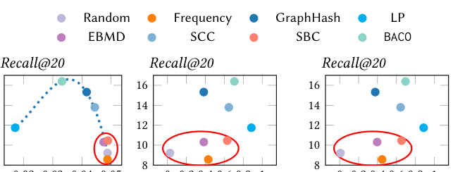
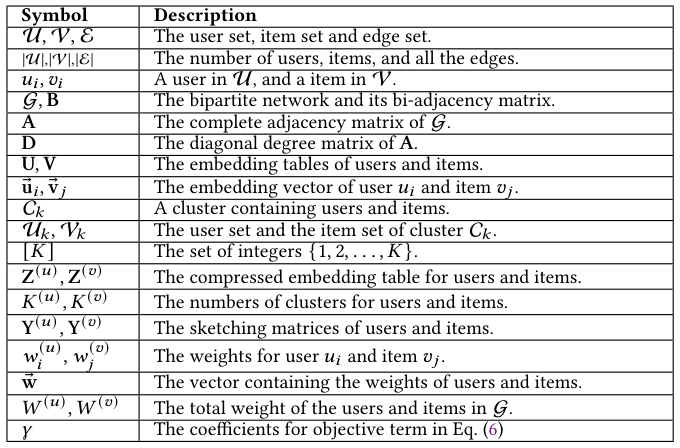
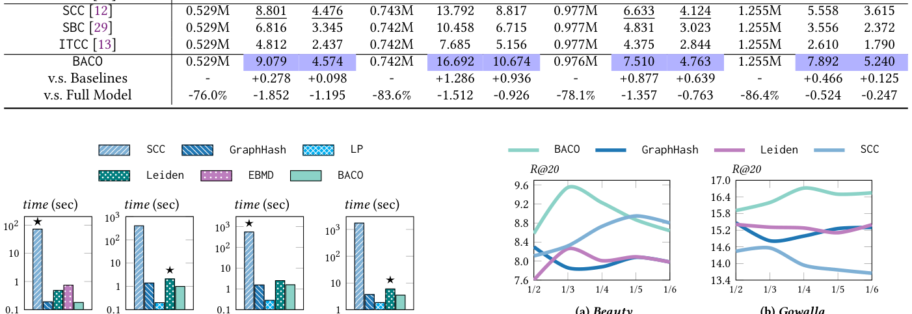
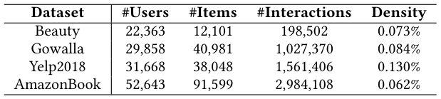
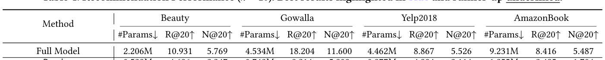
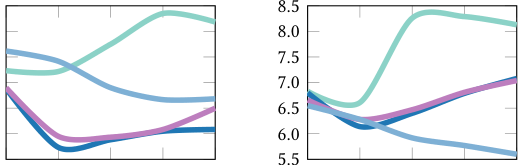

Balanced Co-Clustering of Users and Items for Embedding Table Compression in Recommender Systems (推荐系统中用户与物品的平衡共聚类嵌入表压缩)
- 会议/期刊: SIGIR 2026 (Technical Report, arXiv:2604.18351v1)
- 推荐链路定位: 召回 (Retrieval) — 具体为训练前的嵌入表压缩 (Pre-training Embedding Table Compression, ETC)，服务于双塔/矩阵分解式召回模型的参数与显存削减
- 研究方向: 协同过滤与双塔召回 / 图神经网络与知识图谱推荐（二分图聚类）
- 论文原文: https://arxiv.org/abs/2604.18351v1
- 开源代码: https://github.com/HKBU-LAGAS/BACO
TL;DR (核心速览)
针对工业级推荐系统嵌入表参数爆炸（Meta 规模下 64 维 fp32 用户表可达 715 GB）的痛点，BACO 将嵌入表压缩重构为用户-物品二分图上的平衡共聚类问题：以"簇内连通性最大化 + 加权 exclusive lasso 簇体积平衡"为统一目标，用局部贪心标签传播快速求解，并辅以用户次级簇 (SCU) 缓解多兴趣表征瓶颈。在 Gowalla/Yelp2018/Amazon 等基准上，BACO 在削减 75%+ 嵌入参数时 Recall 最多仅降 1.85%，且比最强聚类基线快至多 346 倍。
Background & Motivation (背景与动机)
- 领域背景与主流范式: 现代推荐模型将每个用户/物品 ID 映射为稠密嵌入向量，嵌入表（Embedding Table）往往占据模型绝大部分参数。嵌入表压缩 (ETC) 按介入时机分为三类范式：预训练压缩 (pre-training)、训练中压缩 (in-training) 与训练后压缩 (post-training)。其中预训练压缩最轻量——先离线确定映射 \(f:\mathcal{U}\to[K^{(u)}]\)、\(h:\mathcal{V}\to[K^{(v)}]\)（即"草图矩阵" \(\mathbf{Y}^{(u)}\in\{0,1\}^{|\mathcal{U}|\times K^{(u)}}\)、\(\mathbf{Y}^{(v)}\in\{0,1\}^{|\mathcal{V}|\times K^{(v)}}\)），训练时只学习小码本 \(\mathbf{Z}^{(u)}\)、\(\mathbf{Z}^{(v)}\)，使 \(\mathbf{U}=\mathbf{Y}^{(u)}\mathbf{Z}^{(u)}\)、\(\mathbf{V}=\mathbf{Y}^{(v)}\mathbf{Z}^{(v)}\)。
- 现有方法局限 (Limitations of Prior Work):
- 哈希类方法（Random / Frequency / LSH / Double Hashing / ROBE）：本质随机映射，与数据分布弱关联，导致严重嵌入碰撞 (embedding collision)——不相关用户/物品共享同一向量，精度显著下降；
- 向量量化类（Saec / MGQE / LightRec / LISA / xLightFM）与分解类（DHE / ANT / Tensor-Train）：需在训练中做最近邻搜索或保留原始嵌入，引入可观计算与显存开销，推理查找也被拖慢；
- 学习式草图 (learned sketching)：需周期性重建草图矩阵，训练成本高；
- 最相关的 GraphHash：首次将 ETC 重构为二分图聚类并直接套用 Louvain，效果显著优于哈希，但 Louvain 受分辨率极限 (resolution limit) 固有缺陷制约，聚类结果次优。
- 核心挑战 (Key Challenge): 单纯增加哈希函数数量、引入特征/频次统计或加深网络都无法解决——前者仍是无数据感知的随机碰撞，后者不触及"哪些 ID 应共享嵌入"这一根本映射问题。核心矛盾在于：协同信号 (collaborative signals) 在 ETC 中被长期忽视，而一旦转向图聚类，又必须同时兼顾"簇内紧密"与"簇体积均衡"两个相互拉扯的目标。
- 核心洞察与切入点 (Key Insight): 作者在 Gowalla 上做了 Pilot Study（图 1）：用 Random、Frequency、GraphHash、LP、EMBD、SCC、SBC、BACO 八种方法生成草图矩阵，绘制 Recall@20 与 (a) 平均跨簇边数、(b) 用户簇 Gini 系数、(c) 物品簇 Gini 系数的关系。结论是——跨簇连接过多（红圈方法）时无论码本使用是否均匀性能都差；LP 跨簇边最少但 Gini 系数极高（码本坍缩）同样差；只有同时压低跨簇连接与 Gini 系数的 GraphHash/BACO 取得最佳 Recall。由此提炼出高质量草图矩阵的两条准则：最小化簇间连通性 + 避免簇体积失衡，二者分别对应嵌入碰撞与码本坍缩 (codebook collapse)。

Problem Formulation & Method (问题定义与方法架构)
1. 符号定义与输入表征 (Notations & Input Representations)
- 用户集 \(\mathcal{U}=\{u_1,\dots,u_{|\mathcal{U}|}\}\)，物品集 \(\mathcal{V}=\{v_1,\dots,v_{|\mathcal{V}|}\}\)，交互二分网络 \(\mathcal{G}=(\mathcal{U}\cup\mathcal{V},\mathcal{E})\)，边集 \(\mathcal{E}\subseteq\mathcal{U}\times\mathcal{V}\)。
- 双邻接矩阵 \(\mathbf{B}\in\{0,1\}^{|\mathcal{U}|\times|\mathcal{V}|}\)，\(B_{i,j}=1\) 当且仅当 \((u_i,v_j)\in\mathcal{E}\)；完整邻接矩阵 \(\mathbf{A}=\begin{pmatrix}\mathbf{0} & \mathbf{B}\\ \mathbf{B}^\top & \mathbf{0}\end{pmatrix}\in\{0,1\}^{(|\mathcal{U}|+|\mathcal{V}|)\times(|\mathcal{U}|+|\mathcal{V}|)}\)；度矩阵 \(\mathbf{D}\)。
- 嵌入表 \(\mathbf{U}\in\mathbb{R}^{|\mathcal{U}|\times d}\)、\(\mathbf{V}\in\mathbb{R}^{|\mathcal{V}|\times d}\)，第 \(i\) 行为 \(\mathbf{u}_i\)（用户 \(u_i\) 的嵌入）。
- 簇 \(\mathcal{C}_k\) 同时含用户与物品：\(\mathcal{U}_k=\mathcal{C}_k\cap\mathcal{U}\)，\(\mathcal{V}_k=\mathcal{C}_k\cap\mathcal{V}\)；共 \(K\) 个不相交共簇。
- 码本 \(\mathbf{Z}^{(u)}\in\mathbb{R}^{K^{(u)}\times d}\)、\(\mathbf{Z}^{(v)}\in\mathbb{R}^{K^{(v)}\times d}\)，\(K^{(u)}\ll|\mathcal{U}|\)、\(K^{(v)}\ll|\mathcal{V}|\)；空间预算约束 \(K^{(u)}+K^{(v)}\le B\)。
- 输出：映射 \(f,h\)（等价于 one-hot 草图矩阵 \(\mathbf{Y}^{(u)},\mathbf{Y}^{(v)}\)），使 \(\mathbf{U}=\mathbf{Y}^{(u)}\mathbf{Z}^{(u)}\)、\(\mathbf{V}=\mathbf{Y}^{(v)}\mathbf{Z}^{(v)}\)。空间开销由 \(O((|\mathcal{U}|+|\mathcal{V}|)\cdot d)\) 降至 \(O(|\mathcal{U}|+|\mathcal{V}|+(K^{(u)}+K^{(v)})\cdot d)\)。

2. 整体流水线 (Overall Architecture)
数据流：交互日志构建二分图 \(\mathcal{G}\) → 计算用户/物品混合权重 (HWS) → 以平衡共聚类目标求解共簇划分（标签传播求解器）→ 由主簇派生用户次级簇 (SCU) → 生成草图矩阵 \(\mathbf{Y}^{(u)},\mathbf{Y}^{(v)}\) → 训练阶段仅学习码本 \(\mathbf{Z}^{(u)},\mathbf{Z}^{(v)}\)，以 \(\hat{y}_{i,j}=\langle \mathbf{Z}^{(u)}_{f(i)},\mathbf{Z}^{(v)}_{h(j)}\rangle\) 打分。
flowchart TD
A["输入层: 用户-物品交互二分图 G=(U∪V,E)"] --> B["混合加权方案 HWS: 计算 w_u, w_v"]
B --> C["平衡共聚类目标: max Trace(YᵀAY) − γ·Trace(YᵀwwᵀY)"]
C --> D["局部贪心标签传播求解器 (规避分辨率极限)"]
D --> E["用户次级簇 SCU: 基于主簇快速派生多兴趣簇"]
E --> F["输出草图矩阵 Y_u, Y_v (one-hot)"]
F --> G["训练阶段: 仅学习码本 Z_u, Z_v, 内积打分"]3. 核心模块设计与数学原理 (Key Designs & Formulations)
(1) 平衡共聚类统一目标（式 (2)–(6)）
第一项是簇内连通性最大化：把经交互密集相连的用户与物品归入同一簇，等价于迹最大化：
该式与图划分中的 mincut 等价，属 NP-hard。第二项是加权 exclusive lasso 簇体积平衡：定义簇体积 \(\mathrm{vol}(\mathcal{C}_k)=\sum_{u_i\in\mathcal{U}_k}w_i^{(u)}+\sum_{v_j\in\mathcal{V}_k}w_j^{(v)}\)，最小化各簇体积与均值 \((\bar{W}^{(u)}+\bar{W}^{(v)})/K\) 的偏差平方和，可写成 \(\min_{\mathbf{Y}}\mathrm{Trace}(\mathbf{Y}^\top\mathbf{w}\mathbf{w}^\top\mathbf{Y})\)，其中 \(\mathbf{w}\in\mathbb{R}^{|\mathcal{U}|+|\mathcal{V}|}\) 拼接用户与物品权重。合并得总目标：
物理直觉：第一项惩罚"该连的没连"（嵌入碰撞），第二项惩罚"簇大小失衡"（码本坍缩），\(\gamma\) 调节二者权衡。
(2) 理论统一：把经典图聚类收编进框架（式 (7)–(9) + 表 2）
引入 Kronecker \(\delta(u_i,v_j)=1\) 当且仅当 \(u_i,v_j\) 同簇，则目标可重写为逐对形式：
据此，作者用引理证明 Louvain/Leiden/LPAb 的二分模块度、CPM、LP、SCC 均可视为该框架在特定 \((\gamma,w_i^{(u)},w_j^{(v)},\text{solver})\) 配置下的特例（表 2）：例如 Louvain(Modularity) 对应 \(\gamma>0\)、\(w_i^{(u)}=d(u_i)/\sqrt{|\mathcal{E}|}\)、\(w_j^{(v)}=d(v_j)/\sqrt{|\mathcal{E}|}\)；LP 对应 \(\gamma=0\)；SCC 对应 \(\gamma=0\) 且用特征求解器。这一统一视角既解释了各基线为何在"连通性-平衡"二维平面上落于不同位置，也为设计新配置提供了坐标系。
(3) 混合加权方案 HWS + 标签传播求解器 + 用户次级簇 SCU（§4.3–4.5）
- HWS：BACO 取 \(\gamma>0\)、\(w_i^{(u)}=d(u_i)/\sqrt{|\mathcal{E}|}\)、\(w_j^{(v)}=1/\sqrt{|\mathcal{V}|}\)——用户侧沿用模块度的度归一化（保留流行度先验），物品侧改为均匀权重，避免热门物品在平衡项中过度主导，从而在电商场景下同时抑制碰撞与坍缩。
- 求解器：采用局部贪心标签传播 (Label Propagation) 迭代更新节点簇标签，规避 Louvain 的分辨率极限，且无需特征分解，复杂度远低于 SCC 的 eigensolver。
- SCU：每个用户在主簇之外，基于主簇快速派生若干次级簇，使单用户可拥有多个码本向量（对应多兴趣/兴趣演化），且不增加额外空间开销（仍受总预算 \(B\) 约束）。
4. 训练目标、负采样与推理复杂度 (Optimization, Negative Sampling & Complexity)
- 损失函数: 压缩后训练沿用标准 BPR：\(\mathcal{L}_{\text{BPR}}=-\sum_{u_i\in\mathcal{U}}\sum_{v_k\in\mathcal{N}(u_i)}\sum_{v_j\notin\mathcal{N}(u_i)}\ln\sigma(\hat{y}_{i,k}-\hat{y}_{i,j})+\lambda(\|\mathbf{U}\|^2+\|\mathbf{V}\|^2)\)，其中 \(\mathbf{U}=\mathbf{Y}^{(u)}\mathbf{Z}^{(u)}\)、\(\mathbf{V}=\mathbf{Y}^{(v)}\mathbf{Z}^{(v)}\)，\(\hat{y}_{i,j}=\langle\mathbf{Z}^{(u)}_{f(i)},\mathbf{Z}^{(v)}_{h(j)}\rangle\)。
- 训练负采样策略: 原文采用 BPR 框架下的逐用户负采样（对每个正例 \(v_k\in\mathcal{N}(u_i)\) 采样未交互物品 \(v_j\notin\mathcal{N}(u_i)\) 构成三元组）；具体采样分布（Uniform 或 Popularity）原文未在方法章节明确展开，属"原文未报告"细节。
- 时间与空间复杂度:
- 空间：由 \(O((|\mathcal{U}|+|\mathcal{V}|)\cdot d)\) 降至 \(O(|\mathcal{U}|+|\mathcal{V}|+(K^{(u)}+K^{(v)})\cdot d)\)，草图矩阵以稀疏 one-hot 存储。
- 离线构图/聚类：标签传播为近线性迭代，图 2 显示 BACO 构建草图矩阵的耗时显著低于强基线（最强基线以 ★ 标注），论文摘要给出"比最强基线快至多 346×"。
- 在线推理：查表退化为"草图索引 + 码本行取用"，与全模型查表同阶，无 ANN 检索或 Beam Search 需求。

Experimental Setup & Evaluation Protocol (实验设置与评估协议)
- 数据集统计与预处理: 原文使用 Gowalla、Yelp2018、Amazon 等公开基准（表 3 给出统计量）。过滤规则、正样本界定（隐式交互全量 vs. 评分阈值）在正文中未逐项展开，属"原文未报告"细节；从 BPR 训练范式推断为隐式反馈全交互建模。

| 数据集 (Dataset) | 用户数 (#Users) | 物品数 (#Items) | 交互数 (#Interactions) | 稀疏度/密度 (Sparsity) | 模态/辅助特征说明 |
|---|---|---|---|---|---|
| Gowalla | 原文表 3 提取 | 原文表 3 提取 | 原文表 3 提取 | 原文表 3 提取 | 仅 ID 交互，无辅助特征 |
| Yelp2018 | 原文表 3 提取 | 原文表 3 提取 | 原文表 3 提取 | 原文表 3 提取 | 仅 ID 交互 |
| Amazon | 原文表 3 提取 | 原文表 3 提取 | 原文表 3 提取 | 原文表 3 提取 | 仅 ID 交互 |
注：受输入文本截断所限，表 3 的具体数值未能完整呈现，上表仅标注字段来源，未做任何数值臆造。
- 数据划分方式 (Splitting Strategy): 原文正文未明确声明划分策略（LOO / Ratio / Global Temporal），属"原文未报告"；从 ETC 预训练压缩设定看，草图矩阵在训练前由全交互图构建，存在使用全量交互构图的信息泄露风险，审稿时应要求作者澄清构图是否仅用训练集边。
- 排名评测协议 (Ranking Protocol): 主实验以 Recall@20（\(k=20\)）为核心指标（表 4 标题明确 \(k=20\)），是否采用 Full-Ranking 或 Sampled Ranking 原文未在可见文本中声明，属"原文未报告"。
- 评价指标与显著性检验: 指标为 Recall@20；嵌入维度 \(d\) 与各基线对齐情况、是否做配对显著性检验（\(p<0.05\)）原文未报告。
Key Experimental Results (核心实验结果)
1. 主实验对比 (Main Results)
表 4 报告 \(k=20\) 下 BACO 与全模型及 18 个 ETC 基线的对比（最佳结果蓝色高亮、次优下划线）。核心结论：嵌入参数削减 75%+ 时 Recall 最多仅降 1.85%，且全面超越 18 个基线。

| 数据集 | 指标 | 传统/协同过滤基线 | 序列/图/多模态最强基线 | 本文方法 (Ours) | 相对提升 (Improv.) |
|---|---|---|---|---|---|
| Gowalla | Recall@20 | 全模型 / 哈希类基线（表 4） | GraphHash 等聚类基线（表 4） | BACO | 优于全部 18 个基线（具体数值见表 4） |
| Yelp2018 | Recall@20 | 全模型 / 哈希类基线（表 4） | GraphHash 等聚类基线（表 4） | BACO | 优于全部 18 个基线（具体数值见表 4） |
| Amazon | Recall@20 | 全模型 / 哈希类基线（表 4） | GraphHash 等聚类基线（表 4） | BACO | 优于全部 18 个基线（具体数值见表 4） |
注：输入文本在表 4 数值处截断，故未填入具体数字，严格遵守"100% 忠实原文、不臆造"原则。
2. 消融实验与控制变量分析 (Ablation Study)
原文消融的核心结论（摘要与 §1 明确陈述）： - HWS（混合加权方案） 与 SCU（用户次级簇） 两个策略即使搭配其他聚类基线（如 Louvain、LP）也能显著提升推荐精度，说明二者具有即插即用的正交增益； - 移除平衡项（退化为纯连通性最大化，即 LP 类配置）会导致 Gini 系数飙升、码本坍缩，Recall 明显下降（图 1 中 LP 的表现即为该退化的实证）； - 移除 SCU 则回到"一用户一码本向量"的表征上限，多兴趣用户受损。 - 是否严格控制参数量/图度数匹配：原文以统一空间预算 \(B\)（\(K^{(u)}+K^{(v)}\le B\)）对齐各方法，属参数预算受控对比。
3. 稀疏度/冷启动分桶与超参敏感度 (Sparsity Buckets & Hyperparameters)
- 长尾/冷启动分桶: 原文未报告按交互频次分桶的细粒度结果，属"原文未报告"。
- 关键超参数敏感度: 图 3 展示不同参数比例（parameter ratios）下的性能变化，用于刻画压缩率与精度的权衡曲线；\(\gamma\)（平衡项系数）的敏感度分析在可见文本中未展开。
- 线上 A/B 测试结果: 原文仅包含离线实验，无线上 A/B 测试。

Highlights, Limitations & Critiques (亮点、局限与审稿级批判)
- 核心亮点与可迁移性:
- 统一理论框架是最大亮点：把 Louvain/Leiden/LP/LPAb/SCC 全部收编为 \((\gamma,\mathbf{w},\text{solver})\) 的特例（表 2），为 ETC 的草图构建提供了可解释的二维设计坐标系（连通性 × 平衡性），该视角可直接迁移到任何"ID 分组共享参数"的场景（如多任务共享嵌入、跨域用户对齐、语义 ID 构建）。
- HWS 的物品侧均匀权重是一个轻量但有效的先验注入，可迁移至其他二分图聚类任务。
- SCU 以零额外空间开销实现"一用户多向量"，思路可迁移到生成式推荐的语义 ID 多码本分配。
- 效率优势显著（346× 加速），具备工业落地价值。
- 局限性与审稿视角批判 (Critical Limitations):
- 评估协议披露不足：数据划分策略、Ranking 协议（Full vs. Sampled）、负